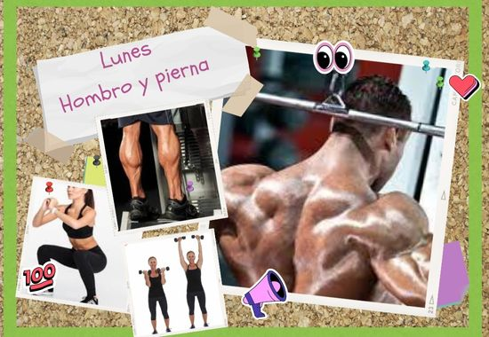
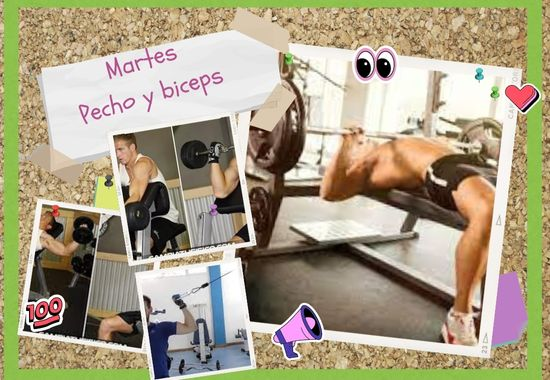
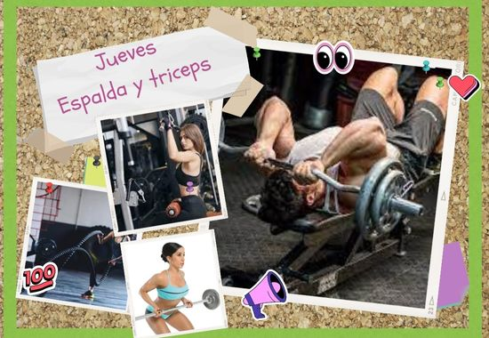

Rutina para Mesomorfos

Lunes
HOMBROS:
Barra tras nuca –
4x8
Press Arnold –
3x8
Elevaciones frontales con disco –
3x8
Pájaro –
3x8
PIERNA:
Sentadilla –
4x8
Extensión de cuádriceps de isquiotibiales en superserie con el anterior con –
3x8
Máquina de gemelo –
3x12

Martes
PECHO:
Press banca –
4x8
Press inclinado mancuernas –
3x8
Aperturas inclinadas –
3x8
Aperturas en máquina –
2xmax
BÍCEPS:
Press en banco scott –
3x8
Polea inferior Flexión en polea alta –
3x8
Miércoles - Descando

Jueves
ESPALDA:
Jalón tras nuca –
4x8
Jalón por delante –
3x10
Remo con barra –
3x10
TRÍCEPS:
Francés con barra –
4x8
Cuerda a dos manos –
3x8
Patada –
2x10
Fondos –
1xmax
Viernes - Descando